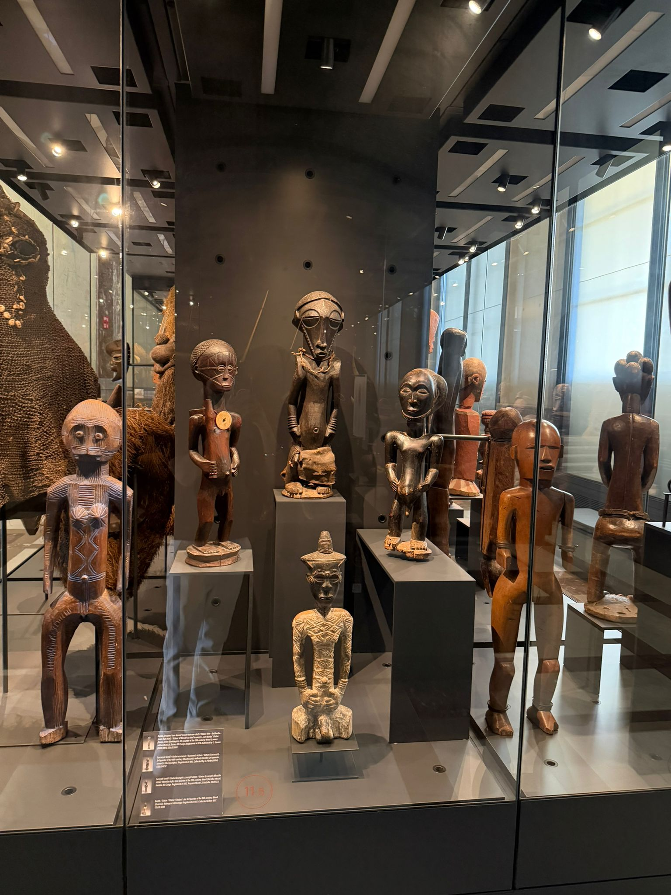
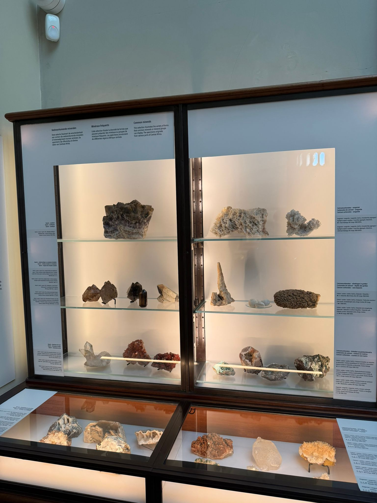
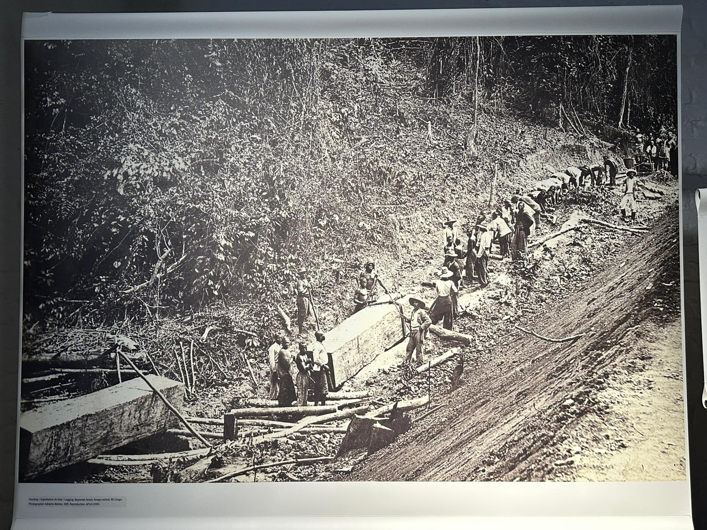
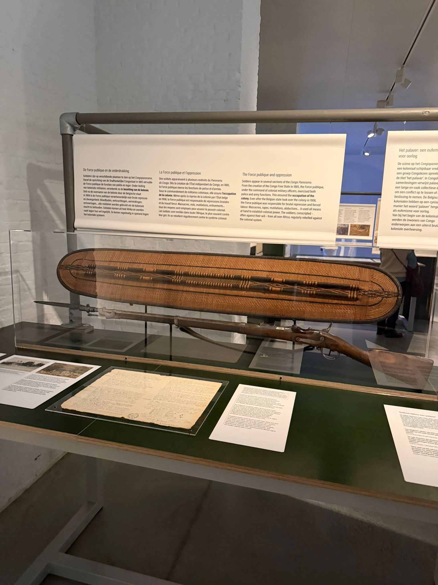
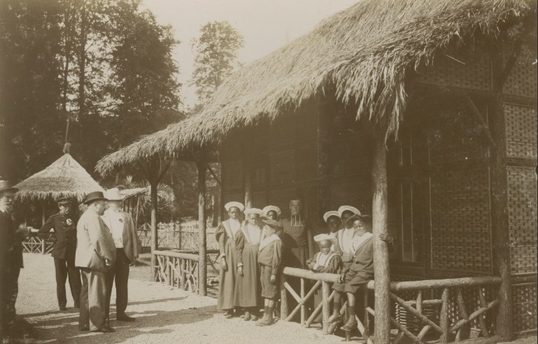

1. Introduction
During our visit to the Africa Museum in Tervuren, I realised how complex and painful Belgium's colonial history really is. Before the visit, I had heard about colonisation and the Congo Free State, but seeing the objects, photos and explanations in the museum made the history feel much more real.
The museum shows both the rich cultures of Central Africa and the difficult history of colonialism. Walking through the exhibitions made me reflect on how Africa was represented in the past and how colonial powers exploited both the land and its people.
I was honestly amazed by how much I learned during this visit. Hearing the stories, seeing the African objects and reading the explanations made me understand much better what happened in Africa back then and how much people lost because of colonisation.
2. African Culture and Art

One part of the museum that stood out to me was the collection of African sculptures and cultural objects. These artworks show the creativity and traditions of different African communities. The sculptures were not just decorations; they often had spiritual or cultural meanings.
Seeing these objects helped me realise that African cultures are incredibly rich and diverse. Unfortunately, many of these cultural objects were taken to Europe during colonial times and are now displayed in museums far away from their original communities.
This part really stayed with me because I felt both impressed and sad at the same time. I was impressed by the beauty of the art, but also sad because so much of that culture was taken away from its original people and ended up in museums.
3. Natural Resources and Exploitation


Another important part of the museum showed the natural resources of Central Africa. Minerals like copper, diamonds and gold were extremely valuable for European countries.
However, these resources were often extracted through exploitation and forced labour during the colonial period. Millions of Congolese people were forced to work under terrible conditions in order to collect rubber and mine valuable materials.
Seeing these displays made me realise how much wealth was taken from Africa. Many historians explain that the exploitation of resources played a major role in the suffering of the Congolese population.
I learned new things here because I did not fully understand before how strongly natural resources were connected to violence and suffering. It made me think about how Africa lost not only resources, but also opportunities and stability because of colonial greed.
4. Violence and Colonial Control

The museum also explains how violence was used to control the population during colonial rule. Weapons and military force were used to enforce the colonial system and to force people to work.
This part of the exhibition made me realise how brutal the system was. Many people were punished or even killed if they did not meet the rubber quotas imposed by colonial authorities.
It is shocking to think that this system existed not that long ago in history.
When I saw this part, I felt disturbed and surprised by how extreme the violence was. Reading about it in class is one thing, but seeing it presented in the museum made it feel much more real and emotional for me.
5. The Human Zoo and Colonial Propaganda

One of the most disturbing things I learned about was the existence of so-called "human zoos". During the colonial exhibitions organised by King Leopold II in 1897, Congolese people were brought to Belgium and displayed to visitors as if they were part of an exhibition.
This shows how Africans were dehumanised and treated as curiosities rather than as equal human beings. Learning about this made me reflect on how racism and colonial thinking shaped the way Europeans saw Africa for a long time.
It also shows why museums today try to present history in a more critical and honest way.
This was one of the moments where I really felt how unfair history has been. I was amazed in a negative way that people were treated like this, and it made me think deeply about respect, equality and how people can lose dignity through colonial power.
6. Personal Reflection
Overall, this visit made me realise how important it is to understand history from multiple perspectives. The Africa Museum today tries to show not only the beauty of African cultures but also the painful history of colonisation.
For me, the most important lesson is that history should not be forgotten. Learning about the past helps us understand the world today and reminds us why equality, respect and human rights are so important.
Museums like the Africa Museum encourage people to reflect on difficult historical events and help create discussions about responsibility and remembrance.
Personally, I felt amazed by how much I learned in one visit. I learned new things about Africa's past, but I also felt sad when I saw how much culture, wealth and history was taken away from African people. Seeing African objects, hearing these stories and reading the museum texts made me understand much better how much was lost.
This visit did not only teach me facts, but also made me feel something. It made me feel more aware, more respectful and more interested in learning the real history behind what happened in Africa during colonial times.